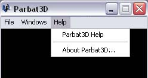

The User Manual can be opened from inside the Parbat3D application by clicking on the "Help" menu and then selecting "Parbat3D Help".
This will open up the contents of the User Manual in the users default Internet browser. The user can then select the help topic they are interested in by clicking on the hyperlink and they will be taken to a page that explains it in detail.
The Parbat3D home page is located at
http://parbat.sourceforge.net/
The latest version of Parbat3D and any updates can be obtained from
http://sourceforge.net/projects/parbat/
Parbat3D was developed by:
Matthew McKellar-Spence
Shane Kingston
Rowan James
Dafydd Williams
Damian Brockie
To contact the development team, email parbat-team@lists.sourceforge.net